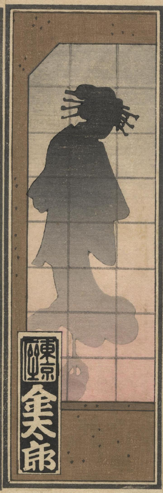

花魁の化物の影絵。着物を着て、多くのかんざしを頭にさしている。
著作者：暁亭／出典：親書誌：U426_nichibunken_0371：東都千社納札大会披露；トウト センジャ ノウサツ オオガイ ヒロウ／日付：2014／資源識別子：U426_nichibunken_0371_0006_0002
Copyright (c)2010- International Research Center for Japanese Studies, Kyoto, Japan. All rights reserved.